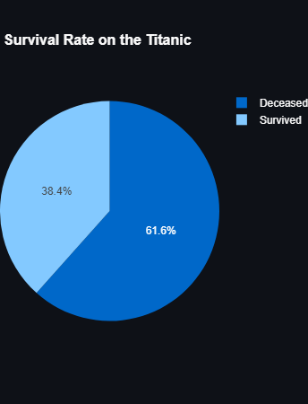

The Tragic Voyage of the Titanic
The Titanic was one of the most luxurious and largest ships ever built. It set sail on its maiden voyage on April 10, 1912, from Southampton to New York City. Despite being labeled "unsinkable," the ship met with a tragic fate when it struck an iceberg and sank, leading to the loss of over 1,500 lives.
The Construction of the Titanic
Construction of the Titanic began in 1909 at the Harland and Wolff shipyard in Belfast, Ireland. The ship was the largest and most advanced of its time, designed to offer the ultimate luxury experience for passengers. Below is an image of the Titanic under construction:
The Ports of the Titanic
The Titanic was originally scheduled to make the following stops during its maiden voyage in 1912:
- Southampton, England: The Titanic's journey began here on April 10, 1912.
- France: After departing Southampton, the Titanic stopped briefly at Cherbourg to pick up additional passengers.
- Queenstown (now Cobh), Ireland: The final stop before crossing the Atlantic. Here, more passengers were boarded, and some mail was loaded.
- New York City, USA: The Titanic's final intended destination. It was scheduled to dock at Pier 59 in New York City on April 17, 1912.
were the key ports planned for its transatlantic route, though the ship tragically sank before reaching its final destination.On April 10, 1912, the Titanic set sail from Southampton, England, with over 2,200 passengers and crew members. The ship made stops at Cherbourg, France, and Queenstown, Ireland, before heading out into the Atlantic Ocean.
The Gender distribution of the crew
The number of males was quiet hihg because most of the crew incharge of operating and maintainig the ship were men
Here is a pie chart of the sex distribution of the passengers:
The Male Survival Rate
On the night of April 14, 1912, the Titanic struck an iceberg in the North Atlantic. Despite attempts to avoid the collision, the iceberg breached the ship's hull. Below is an illustration showing the moments after the iceberg was spotted:
The Female Survival Rate
After the collision, the Titanic began sinking. Despite the efforts of the crew to deploy lifeboats, many passengers were left on board as the ship went under. The tragedy remains one of the deadliest maritime disasters in history. Here is a depiction of the lifeboats being lowered:
The Overal Survival Rate
Women and children were prioritized in the rescue operation leading to more women surviving than men.
The sinking of the Titanic led to major improvements in maritime safety, including the implementation of new safety regulations and lifeboat requirements. Today, the story of the Titanic continues to capture the imagination of people around the world. Here is an image of a memorial to the victims of the Titanic disaster:
